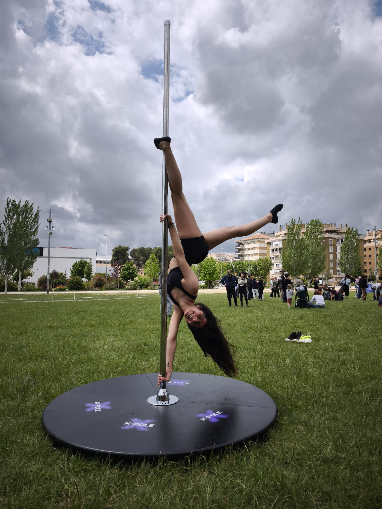
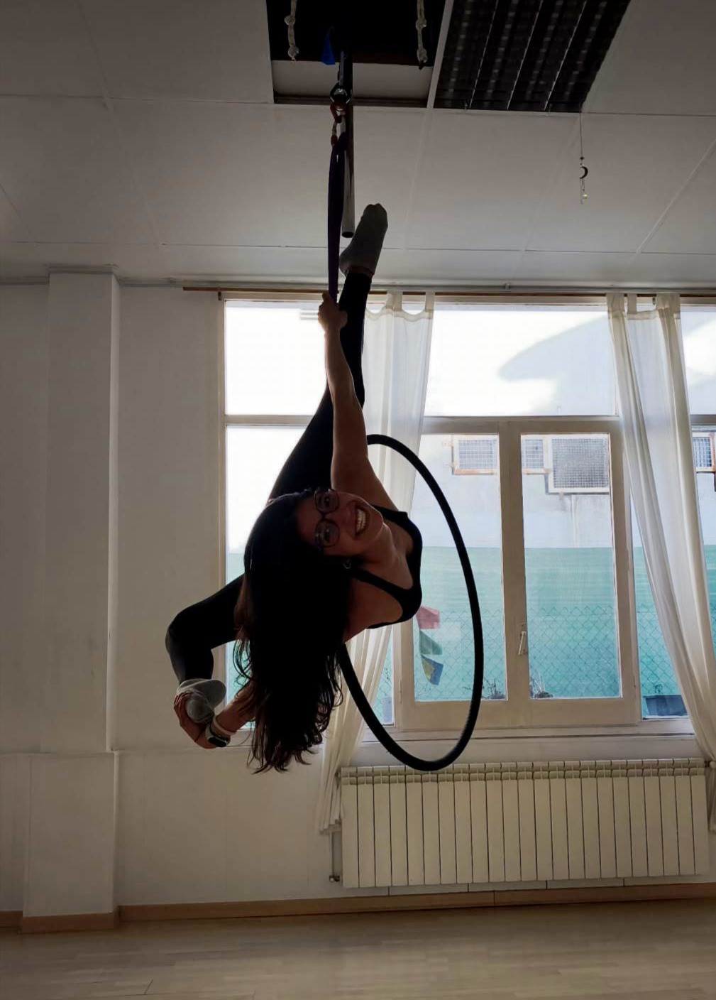
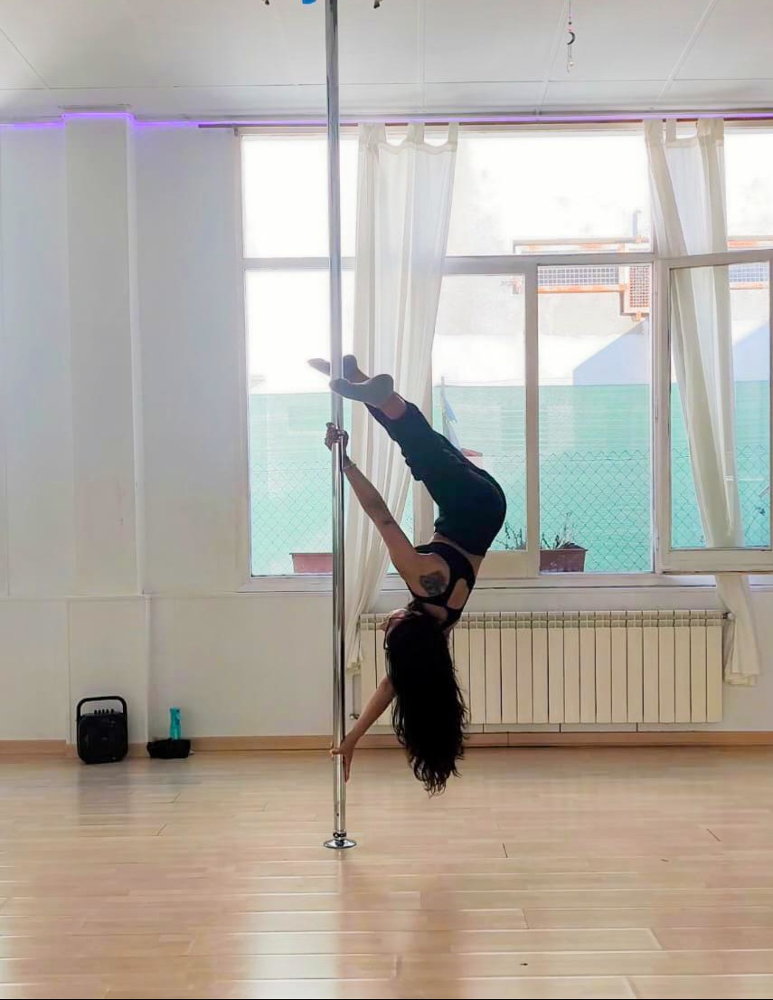

HOBBIES
Uno de mis hobbies favoritos es el pole y el aro. Empecé a practicarlos hace aproximadamente un año y desde entonces se han convertido en una parte importante de mi rutina. Me gusta porque me reta, me hace sentir fuerte y me permite avanzar poco a poco, viendo resultados reales. Es una mezcla de deporte, arte y disciplina que me hace desconectar y disfrutar del proceso.



MAS SOBRE MI
Me gustan muchísimo los animales. Tengo dos gatos que forman parte de mi día a día y siempre consiguen sacarme una sonrisa.